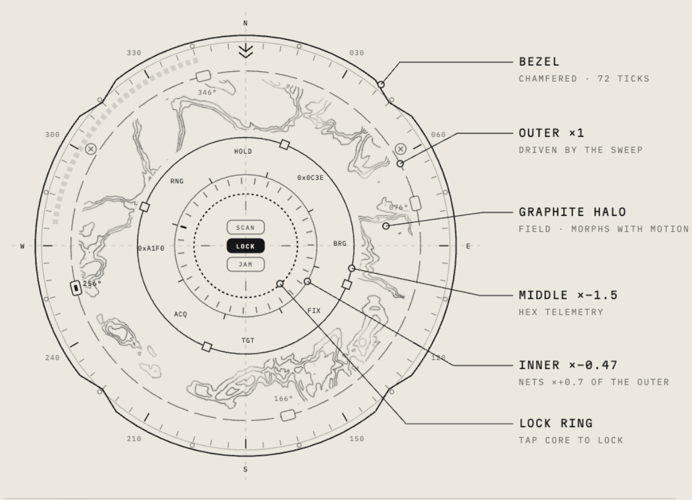

GRT-10 — spec, frozen

Here's how I made this sci‑fi UI animation.
What's insideSVG layers → noise → stacking → anime.js
motion → controls

Some animations are too hard to draw by hand.
The halo is a good example, it's way too complicated to draw stroke by stroke. So instead I generate it using seeded Perlin‑style noise field, sampled and marched into SVG contour lines, right there in JavaScript.